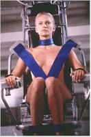
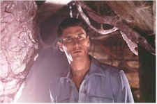
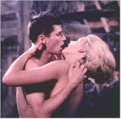

Contents | Features | Reviews | Books | Archives | Store |
 |
|
| Movie Credits | Buy It! |
Species II
Review by Elias Savada
Posted 10 April 1998
| Directed by Peter Medak. Starring
James Cromwell, George Dzundza, Screenplay by Chris Brancato |
Ah, the wonderful world of sequels. Think of the Academy-Award winning Godfather II. Recall the imaginative Star Wars trilogy. The wacky Back to the Future flicks. Those hair-raising Alien II and IV follow-ups (forget the third installment).
Species II is one sequel that screams...Yuck! It also conjures up...Why? Screenplay be damned. Acting? Throw it out the window. Pacing deader than the many bed-ridden corpses throughout the movie. Effects. Yeah, they're ok (at least the producers kept the H.R. Giger design). If you liked the 1995 original, consider this. Pretend Species is a great body of work (I said pretend). Species II can't hold a pinkie up to it. Probably not even a pinkie's fingernail. If MGM thought they were creating a new franchise here, a la James Bond, they are sadly mistaken. They probably realize that as the film was not pre-screened for the press prior to its unleashing on an unsuspecting public.
This gore fest is chockfull of rotting flesh and rotten writing, the latter courtesy of X-Files' Chris Brancato, who even dares to toss in an off-the-cuff reference to the popular TV show. Director Peter Medak (most recently helming TNT's The Hunchback of Notre Dame) must have been gone deaf from the bells in the cathedral when this film was being made. What else would explain his failure to hear his actors read so many dreadful lines in such a wooden manner. He inspires his actors to genuine boredom. Particularly George Dzundza as the "intimidating" Colonel Carter Burgess Jr. If you were to look up "over-acting" or "ham" in the dictionary, Dzundza's role here would provide the perfect definition. Michael Madsen as Press Lennox is a close second. Unfortunately, as Madsen is truly capable of some great performances, including those found in Donnie Brasco and as the psychotic Mr. Blonde in Reservoir Dogs. When the Colonel enlists Lennox, now a private-sector security consultant, to help fight the alien threat (as he did in the first film), he refuses. The officer, disfigured with one cloudy eye, offers up a million bucks and, presto, guess who's on board? As in life imitating art, the entire cast (including the three returns from the original) must have had a large change purse dangled before them before agreeing to appear (I didn't say act) in this sad excuse for a film.
An extended opening sequence heralds man's inaugural landing on Mars (sponsored by the likes of Pepsi, Sprint, and Reebok through exterior spacecraft endorsements) and the subsequent infection of three astronauts by extra-terrestrial DNA. Meanwhile, in an underground, supposedly high-security facility not too far from Capital Hill, Dr. Laura Baker (Marg Helgenberger) is supervising the development of Eve (Natasha Henstridge), a clone of the human-alien hybrid seen as Sil in the first (and, regrettably, not the last) Species. Reason is tossed to the wind in figuring out why anyone would create such a threat to the human race, although by film's end it's obvious that Brancato is cribbing from the Terminator films in transforming the bad Sil into a good Eve.
Richard Belser has a brief cameo at the film's beginning, as the President of the United States. He must have had a day off from filming Homicide (one of television's greatest hours); location scenes were filmed in Baltimore, Laurel, and Columbia, Maryland, as well as in Washington DC. An after-thought, it appears, as Bill Clinton's portrait is seen briefly in the office of southern Senator Ross (James Cromwell), whose son Patrick (Justin Lazard) is one of the infected spacemen--a bad seed whose inter-species foreplay and extra-terrestrial intercourse back on earth creates an instant brood of future genetic monstrosities he squirrels away on the family farm. The heightened display of T and A might provide a kick for those viewers who surf the internet's sex sites, but it only further shows the flaws in the film. And when I say the acting is wooden, there is no pun deserved.
I already mentioned the pacing (or lack thereof). Chase scenes are played out like a walks in the woods. It's also entirely unbelievable that all three astronauts are sent off on their own after such a historic mission and that all live in the Metro Washington DC area. Dennis Gamble (Mykelti Williamson), the only non-infected member of the Mars team, joins with Lennox in quickly popping from one demon seed outburst to the next, totally unaware of the traffic situation in area and the time most commuters spend idling on the Beltway here in Washington.
The film comes to a predictable close with a gross-out at the ok corral. The pupacious spawn of the handsome astronaut turned sex-crazed alien are done away by what appears to be bug spray. Like cockroaches, you can't exterminate them all. Down the road, sometime in the future, will be Species III. Oh, the horror! The horror!
Contents | Features | Reviews | Books | Archives | Store
Copyright © 1999 by Nitrate Productions, Inc. All Rights Reserved.